Mo's First Dressage
Show I headed out to Curragh early with Mo
and Nero. They
were both entered in the Intro classes.
With the time change, I was
grooming and tacking up in the dark for
an 8 am ride time. I needed time
to walk both of them around before mounting
up.
In the end Mo got a 61% and 63% for 2
4th place ribbons. We'd have scored better on the first test
if I hadn't blanked and had a late transition.
He was a little looky in our first walk
around the indoor, but except for some
counter bend to look at happenings around
the ring, he put in a couple of very nice,
consistent tests.
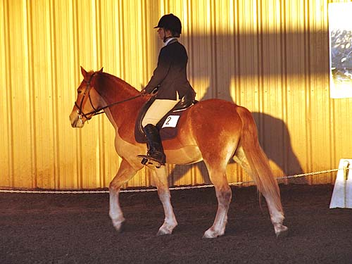
Walking around before the bell rang.
The sun was just coming up as we started our first test.
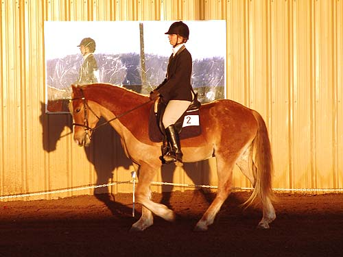
He's starting to shed out, but it's
been hot the past few weeks, and he's working much better with the little
clip he got.
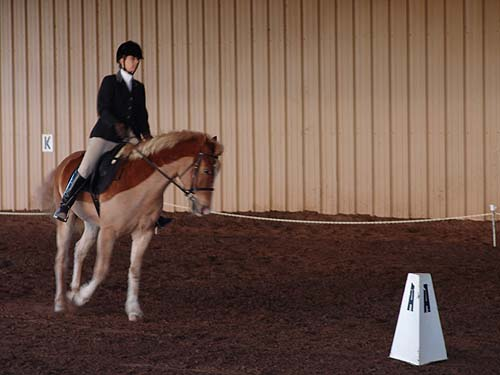
Entering at A. Not many pictures of
this test.
A cloud came out and it was too dark for
the camera to get pictures that weren't blurry.
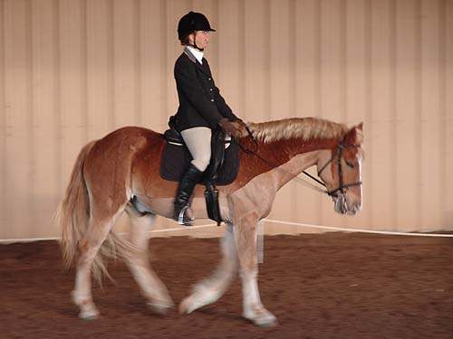
Walk across the diagonal. He's just
figuring out stretching down.
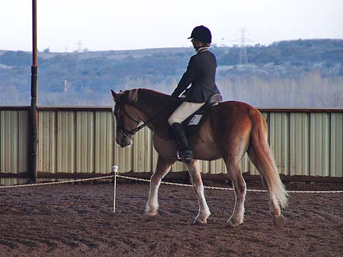
He focused once we were in the test
and no spooks at noises and birds in the ring.
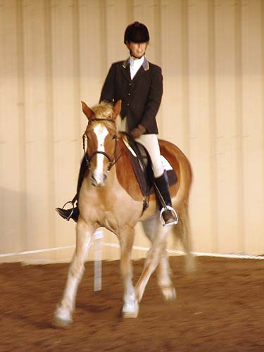
A trot circle. The judge wanted more
bend.
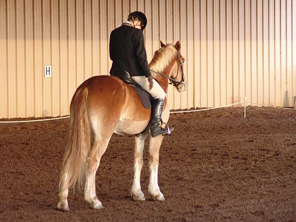
The final halt was off the centerline,
but not bad.
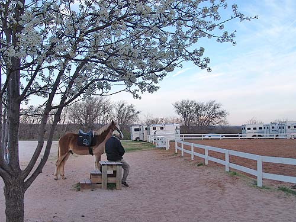
Father and Mo waiting while
I warmed up Nero. It's warm, and everything is blooming down here.
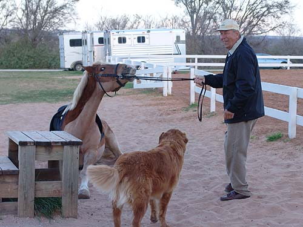
I probably shouldn't show this, but
I guess Mo couldn't pass up the wonderful sand by the mounting block. Father
got him up before he rolled on the saddle....
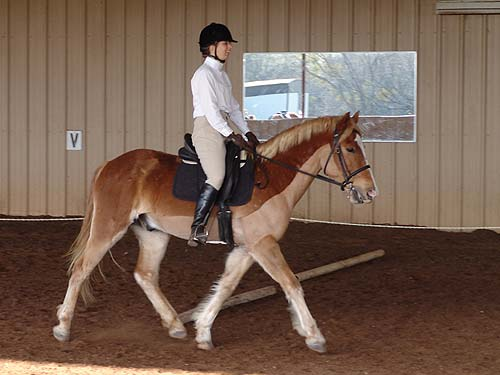
Our second test was better than
our first. Nice and steady.
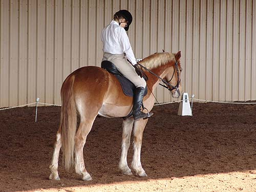
A very nice halt at X.
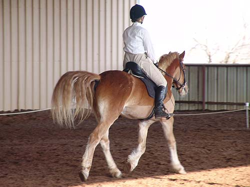
A little tail swish when I told him
he really needed to go to the trot from the halt.
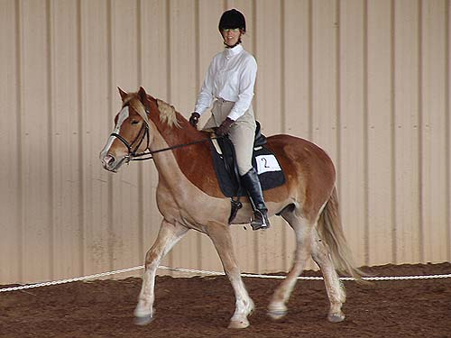
His head wasn't completely steady,
but I opted for relaxed instead of working on flexing during the test.
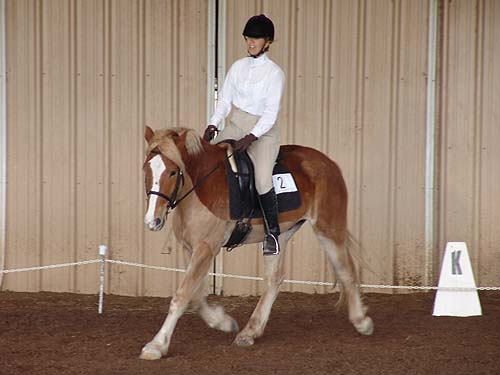
We didn't go into the corners as much
as we should, but at this level, I'd rather make bigger curves and not
mess with his balance.
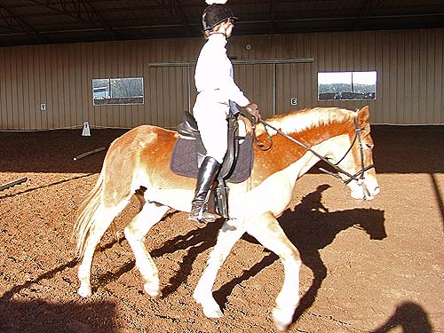
I have to think about his right shoulder,
so that he doesn't pop it out.
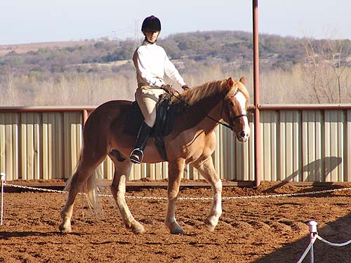
He has a nicely forward walk.
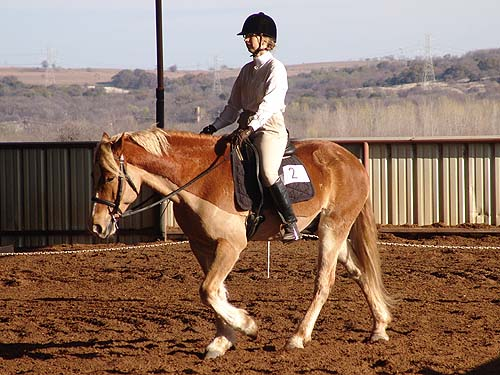
He reached forward, but kept a lot
of swing in his walk. We got a 7 on his walk for both tests.